Keynote 1 [09:20~10:00]
 |
Title | OpenStack Scope: How we’re making the core smaller while embracing the freedom to innovate around it |
| Name | Mark Collier, Chief Operating Officer, OpenStack Foundation | |
| Speaker Profile | Mark has spent his career working on technologies that disrupt industries, from "a computer on every desk", when he worked at Dell in the 90's as a product manager, to the digital music shift as Senior Director of Business Development at Yahoo! Music, to the cloud computing era, where as VP of Business Development at Rackspace he led the effort to embrace an open source development model and build an ecosystem and community around it, resulting in the founding of OpenStack in 2010.
In 2012, he started the OpenStack Foundation, along with Jonathan Bryce, and now serves as it's Chief Operating Officer working full time on "Protecting, Empowering, and Promoting OpenStack and the community around it, including users, developers and the entire ecosystem." Outside of OpenStack, he loves music, Austin, BBQ, wakeboarding on Lake Austin, and basketball (Rockets & Longhorns). He goes by "sparkycollier" on the inter webs, to honor his great dane sparky (R.I.P.) |
|
| Presentation Summary |
This talk will cover the approach we’re taking as a community to address many user’s desire for a focused, small set of reliable and dependable services to enable IaaS (think Nova and friends), while at the same time supporting and recognizing the incredible innovation engine happening around that core (think Trove, Sahara, Designate and beyond), all being built “The OpenStack Way". |
Keynote 2 [10:00~10:30]
|
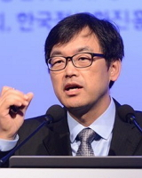 |
Title | Leveraging OpenStack to Realize the Software-Defined Mobile Network |
| Name | 최진성 전무 / SKT | |
| Speaker Profile | Chief Technology Officer (CTO), Executive Vice President,
President of SK Telecom Corporate R&D Center, SK Telecom) |
|
| Presentation Summary |
Keynote 3 [10:30 ~ 11:00]
 |
Title | 엔터프라이즈 기업을 위한 개방형 클라우드 컴퓨팅 |
| Name | 박관종 상무 / HP | |
| Speaker Profile | 2014년 4월 ~ : 한국휴렛팩커드 클라우드 사업부 총괄
2009년 3월 ~ 2014년 3월 : 한국휴렛팩커드 서비스사업부 컨설팅 사업 담당 2007년 1월 ~ 2014년 2월 : 한국IBM 소프트웨어사업부 BI&PM 사업부 프리세일 담당 2000년 6월 ~ 2006년 3월 : 한국휴렛팩커드 컨설팅 사업부 기업고객 수석 컨설턴트 |
|
| Presentation Summary |
산업간 경계가 무너지고 오픈소스에 대한 과거와 현재의 위상을 설명 드리고, 새로운 비즈니스 환경과 Open source가 위력을 발휘하는 시대에서 “엔터프라이즈 기업을 위한 개방형 클라우드 컴퓨팅”에 대한 HP 의 클라우드 전략을 소개 합니다. |
Invited Talk [11:40 ~ 12:00]
|
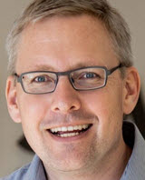CTSO of Networking & Security / VMware "/> |
Title | The Evolution of OpenStack Networking |
| Name | Guido Appenzeller, CTSO of Networking & Security / VMware |
|
| Speaker Profile | 귀도 아펜젤러는 VMware 네트워크 및 보안 부문의 기술전략을 총괄하는 CTSO(Chief Technology Strategy Officer)를 맡고 있다. VMware에 합류하기 전 빅 스위치 네트웍스(Big Switch Networks)를 창업하여 4년간 CEO로 회사를 이끌어 왔으며, 그 전에는 볼티지 시큐리티(Voltage Security)의 창업자 및 CTO로서 근무한 바 있다. 2008년에서 2010년까지는 스탠포드 대학의 교수 및 클린 슬레이트 랩(Clean Slate Lab)의 책임자로 재직했다. 아펜젤러 CTSO는 MIT TR35로부터 ‘최고 기술 리더’로 선정되었으며, 세계경제포럼이 선정한 ‘테크놀러지 파이오니어’, 그리고 골드만삭스가 발표한 ‘세계 100대 주목할 만한 기업가’에 선정된 바 있다. 아펜젤러 CTSO는독일 카를스루에(Karlsruhe) 공과대학에서 석사, 미국 스탠포드(Stanford) 대학에서 박사학위를 취득했다. | |
| Presentation Summary |
Track 1 [12:50 ~ 13:20]
|
|
Title | TripleO 를 이용한 빠르고 쉬운 OpenStack 설치 |
| Name | 변상욱 부장 / HP | |
| Speaker Profile | Cloud Consultant at HP now
Project Manager, HP Linux/HP-UX support Engineer, HP |
|
| Presentation Summary |
OpenStack project 중의 하나인 TripleO (OpenStack On OpenStack) 을 이해하고, TripleO 를 이용하여 OpenStack 을 빠르고 쉽게 설치 하는 방법에 대한 소개 |
Track 1 [13:30 ~ 14:00]
 |
Title | Red Hat Enterprise Linux OpenStack Platform 6 |
| Name | 최원영 부장 / Redhat | |
| Speaker Profile | 한국레드햇의 최원영 부장은 레드햇의 플랫폼, 스토리지 및 클라우드 제품의 솔루션아키텍트를 담당하고 있다. 기업의 IT 환경을 구축함에 있어 뛰어난 레드햇의 오픈소스 솔루션을 통해 비용절감과 효율적인 운영이라는 두마리 토끼를 잡을 수 있는 방안을 제시하는 오픈소스 전도사이다 | |
| Presentation Summary |
스케일아웃형 클라우드 인프라를 구축하기 위한 기술로써 크게 주목받고 있는 오픈스택기술을 안정적인 기업용 오픈소스제품으로 레드햇에서 제공하고 있는 Red Hat Enterprise Linux OpenStack Platform 6에 대한 소개를 합니다. |
Track 1 [14:10 ~ 14:40]
|
|
Title | 오픈스택 KBS방송제작시스템 적용 사례 |
| Name | 임태현 / KBS | |
| Speaker Profile | 현) KBS 방송시설국
전) 삼성전자 미디어솔루션센터 전) 티맥스소프트 재팬 |
|
| Presentation Summary |
1. 오픈스택을 적용한 시스템 개요
2. 시스템 구성 주안점 3. 개선된 시스템으로 인한 효과 4. 향후 오픈스택 적용 확대 계획 |
Track 1 [14:50~15:20]
|
|
Title | VDI by OpenStack? It works!!! |
| Name | 안명호 대표 / MHR | |
| Speaker Profile | 클라우드 컴퓨팅 관련 솔루션과 서비스를 개발하고 있는 주식회사 MHR 대표를 맡고 있으며, 국내게임벤쳐회사의 CTO로서 Online Game Server을 개발했었고, 일본 IT 컨설팅 회사, CyberRenaissance Inc. CTO로서 IT 컨설팅, 벤쳐캐피탈 기술 심사, 서비스 개발 등의 업무를 담당했습니다. 태국, 인도 등에서 국제적인 개발프로젝트의 총괄매니져를 했으며, 기타 몇 권의 컴퓨터 저서를 출간했고 다수의 국가 R&D 프로젝트를 총괄책임자로 진행했습니다. KAIST SW전공 | |
| Presentation Summary |
현재 IT 환경에서 모바일을 제외한다면 가장 많이 사용되는 OS는 윈도우와 리눅스일것이다. 대개의 경우 오픈스택은 리눅스환경을 제공하기 위해 많이 사용되고 있지만 이것은 오픈스택의 능력을 온전하게 활용치 못하는 것이다. 데스크탑 OS로서 가장 많이 사용되는 윈도우 역시 오픈스택을 이용해 사용하는 것이 가능하다.
본 발표에서는 오픈스택으로 윈도우를 가상환경에서 사용하는 것이 충분히 가능하다는 것을 이야기해주고, 주요한 기술적 내용을 설명하고자 한다. |
Track 1 [16:30~17:10]
|
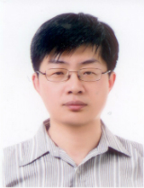 |
Title | 갈파고스의 이구아나 인프라에서 오픈소스를 올리다. 그래서 보이는 오픈스택 |
| Name | 장재민 본부장 / 스마일 서브 | |
| Speaker Profile | 스마일서브 글로벌사업본부 부장 | |
| Presentation Summary |
IAAS에 필요한 인프라와 적용되는 오픈소스
성능과 관련된 하드웨어 의존성, 그리고 허와실 오픈스택 그리고 스마일서브의 접근방식 서버환경 - 전원관리 - 콘솔 운영체제 준비 운영체제 배포 - 오픈스택의 베어메탈 서버 - 스마일서브 10분개통 / 1분 개통 서비스 네트워크 - Open Networking - Intel DPDK 네트워크 보안 - netfilter - openstack , linux, netfilter - openstack, arp posiong - intel DPDK and netfilter ARM Server 와 POE |
Track 1 [17:10~17:50]
|
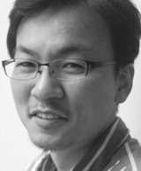 |
Title | OpenStack is Space Ace! Really? |
| Name | 최정대 셀장 / 다음카카오 | |
| Speaker Profile | 다음카카오에서 클라우드 컴퓨팅을 구현하려 노력하고 있습니다. | |
| Presentation Summary |
OpenStack은 클라우드 컴퓨팅을 위한 Cloud OS를 목표로 하고 있다. 그럼 현재 상태로 과연 그게 가능할까?
그럼, 클라우드 컴퓨팅을 위해서 OpenStack 이외에 더 필요한 것은 무엇일까? |
Track 2 [12:50 ~ 13:20]
|
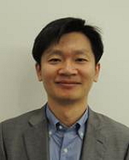 |
Title | Cisco Defined Openstack |
| Name | 김형수 부장 / Cisco | |
| Speaker Profile | 現)시스코코리아 SDN 스페셜리스트
前)SDS Consumer Mobility Service팀 클라우드 서비스 PM 컴퓨터시스템응용 기술사 |
|
| Presentation Summary |
시스코에서 바라보는 Openstack 비전과 전략에 대해서 소개하고 기업에서 도입하고자 하는 Private Cloud 구축에 대한 효과적이며 안정적인 방안 소개
- Cisco의 Openstack 비전 및 전략 소개 - 기업내 Private Cloud 구축을 위한 UCS 서버 및 Red Hat 기반의 UCSO CVD 소개 - ACI와 Openstack 연동을 통한 효과적인 오케스트레이션 데모 |
Track 2 [13:30 ~ 14:00]
|
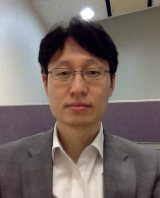 |
Title | Open Source for PaaS: Why it's Hot |
| Name | Hakchin Kim, Field Engineering and Customer Success Specialist, Pivotal | |
| Speaker Profile | Hakchin Kim came to Pivotal thru the acquisition of Greenplum where he was responsible for the technical team in Korea. Hakchin’s previous roles include Senior Manager of Consulting at KPMG and Senior Consultant at SAP in Korea.
Hakchin’s experience covers application programming, software solutions and experience in delivering large enterprise and cutting edge technology projects. Hakchin has also delivered his own designed & programmed commercial applications to several enterprise customers. |
|
| Presentation Summary |
Everyone seems to be talking about PaaS these days. But what is the promise of Platform as a Service?Hear from Pivotal about Cloud Foundry. The presentation examines the open source movement for PaaS and what it means for organisations and for the developers that will power it. |
Track 2 [14:10 ~ 14:40]
|
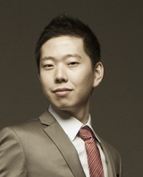 |
Title | 오픈스택 클라우드에 최적화된 네트워크 가상화 ‘누아지(Nuage)' |
| Name | 배용준 이사 / Nuage Networks | |
| Speaker Profile | 배용준 이사는 누아지 네트웍스(Nuage Networks) 아태지역부문에서 사업 개발을 담당하고 있다.
전통 네트워크 장비보다 더 고부가가치를 창출할 수 있는 SDN(소프트웨어정의네트워킹) 네트워크 솔루션을 제공해 고객 IT 인프라를 구축하는데 중점을 두고 있다. 이전에는 HP와 레드햇에서 블레이드 아키텍처, 클라우드/스테이트리스(stateless) 컴퓨팅, 리눅스 및 오픈소스, 네트워킹, 가상화 분야에서의 업무를 수행했다. 작년까지는 호주에 위치한 HP 아태지역 본사 클라우드 사업부에서 클라우드 기술영업 컨설팅 리더로서 프라이빗, 퍼블릭, 하이브리드 클라우드 사업을 맡았으며, 오픈스택, HP Helion, HP CloudSystem, 그 외 다양한 오픈소스 플랫폼, 팬-HP 클라우드 솔루션 및 서비스 컨설팅 업무를 수행했다. 또한, 스케일아웃 슈퍼컴퓨팅 플랫폼을 설계하는 HP 아시아태평양 및 일본 기업용 서버 스토리지 네트워크 사업부에서 솔루션 아키텍트로 근무하면서 세계 500대 슈퍼 컴퓨팅 리스트에서 HP의 입지를 확고히 하는 데 기여했다. Joon Bae is now responsible for the Nuage Networks business, being focused on enabling the transformation of customer IT infrastructure to provide high value SDN services beyond traditional network devices in the APAC region. Prior to joining Nuage Networks, he held a variety of roles at the local and regional level for leading-edge technologies such as Blade architecture, Cloud and stateless computing, Linux, open source, networking and virtualization (Hewlett-Packard and Red Hat the latest two). He was the regional Cloud presales consultant lead of HP’s Cloud Business Unit based in Sydney, Australia, working on private, public and hybrid Cloud opportunities and adoption with OpenStack, HP Helion, HP CloudSystem and other various open source platforms and pan-HP Cloud solutions and services. Prior to the Cloud era, he was a Solution Architect at HP’s APJ ESSN (Enterprise Server Storage Network) Competency Lab designing scale-out supercomputing platforms in order to ensure the company to be dominant in the top 500 world-fastest computing list. |
|
| Presentation Summary |
오픈스택의 뉴트런 (Neutron) 네트워크 모델은 클라우드 도입에 많은 도움을 주고 있지만, 오늘날 엔터프라이즈나 클라우드 서비스 사업자에 필요한 네트워크 요구사항을 충족시키지 못하는 것이 현실이다.
Randy Bias 와 Bill Baker가 클라우드 애플리케이션의 병렬분산구조를 처음 소개하고 이를 “pets and cattle”로 비유했다. 전통적인 데이터센터 환경에서는 컴퓨팅을 애완동물(pets)처럼 소중히 여겨 고가용성(HA)과 같은 스케일업(scale-up) 기능을 중시했다. 그러나 최근 클라우드 환경에는 이를 목축동물(cattle)에 비유해 단시간 장애를 수용하더라도 신속한 프로비저닝을 통해 애플리케이션 서비스 지속성을 유지하는 것이 더 중요하다고 보고 있다. 특히 목축동물의 생존과 스케일아웃(scale-out) 기능 실현을 돕는 목축개(herding dogs)의 역할을 하는 컨트롤 플레인(control plane)의 중요성이 대두되고 있다. 누아지 네트웍스(Nuage Networks)는 이러한 컨트롤 플레인을 제공해 OpenStack Neutron에 뛰어난 확장성을 갖춘 기업용 네트워크 솔루션을 제공하고 있다. 이번 세션에서는 네트워크 컨트롤 플레인이 클라우드 환경에 제공하는 장점을 성공적인 오픈스택 클라우드 환경 구축에 핵심 요소가 되는 ‘성능, 안정성, 확장성’을 중심으로 소개한다. The current Neutron networking models are great for many use cases, but do not tackle the real world requirements of today's Enterprises and CSP’s. Nuage Networks delivers a scaleable enterprise class networking solution for OpenStack Neutron. Andy Bias and Bill Baker first illustrated the parallel of cloud applications to "pets and cattle”, by setting the primitives for scale-out and applications that can tolerate failure. For the cloud applications, (ie cattle), an often forgotten aspect though is the "herding dogs", or simply the control plane that will manage the lifecycle of the cloud and the applications. And as in every cattle, the herding dogs are critical for the survival of the cattle, so is the control plane in a scale out cloud. In this talk will focus specifically on the network control plane and outline the key requirements in terms of performance, reliability, and scale, all of which enable the seamless scale of OpenStack clouds. |
Track 2 [14:50 ~ 15:20]
|
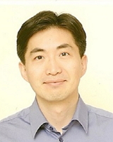 |
Title | Towards Programmable Network (Concept and Use Cases) |
| Name | 정재웅 대표 / Atto Research | |
| Speaker Profile | 2012. 1 ~ 아토리서치 대표이사
2010~2011 Intel Lab. Senior Research Scientist 2008~2010 AMD Senior Design Engineer 2004~2008 Ph.D. Electrical Engineering, Stanford Univ. |
|
| Presentation Summary |
기존의 Dedicated 하드웨어에 고정된 설정을 기반으로 운영되던 컴퓨터 네트워크가 큰 혁신의 시대를 맞이하고 있다. 네트워크 시스템을 구성하는 Data Plane 과 Control Plane 모두에 Programmability 를 부여하여, 보다 flexiable 하고 smart 한 네트워킹이 가능하도록 하는 혁신적인 기술들이 시장에 급격히 확산되고 있다. 이 발표에서는 이러한 기술들의 중심인 SDN, NFV, SDDC 의 개념을 간단히 살펴보고, 무선망, 유선망, 데이타 센터, WAN 에서의 이 기술들의 다양한 적용예를 살펴 본다. |
Track 2 [15:50~16:20]
|
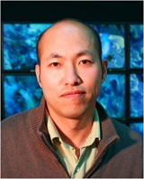 |
Title | Building Software-Defined Infrastructure with SDN/NFV/Cloud Integration |
| Name | 김종원 교수 / GIST(광주과기원) | |
| Speaker Profile | 2001.9~현재: 광주과학기술원 정보통신공학과 부교수 / 교수.
2008.4~현재: 광주과학기술원 슈퍼컴퓨팅센터 센터장 2011.1~현재: FIF (미래인터넷포럼) 테스트베드 작업반 의장 |
|
| Presentation Summary |
최근 주목 받는 SDN/NFV/Cloud 통합으로 이뤄지는 미래형 Software-Defined ICT 인프라의 모습을 전망해 본 후에, Box 형태의 융합형 자원 집합을 OpenStack 을 중심으로 한 다양한 Open-Source 소프트웨어들로 통합/관제하면서 새로운 인프라에 대한 이해와 경험을 쌓아가는 방법을 논의한다. |
Track 2 [16:30~17:10]
|
|
Title | Apache Tajo on Swift - Bringing SQL to the OpenStack world |
| Name | Apache Tajo PMC Member, 손지훈 | |
| Speaker Profile | Ph.D candidate (Computer Science & Engineering, 2010.3 ~)
Apache Tajo PMC and Committer (2014.5.1 ~) Mentor of Google Summer of Code (2013) |
|
| Presentation Summary |
Apache Tajo 소개
SQL-on-Swift SQL의 장점 Swift API를 이용한 분석 vs SQL을 사용한 분석 Swift 위에서 Tajo의 동작방식 소개 Roadmap 향후 Tajo의 OpenStack 지원 방향 |
Track 2 [17:10~17:50]
|
|
Title | OPNFV (Open Platform for Network Function Virtualization) |
| Name | 조만석 / Open Frontier Lab | |
| Speaker Profile | 소속: Open Frontier Lab.
활동: OPNFV committer 저서: UNIX V6로 배우는 커널의 원리와 구조 |
|
| Presentation Summary |
OPNFV는 NFV(네트워크 기능 가상화)를 공개 소프트웨어로 개발하는 프로젝트입니다. 기존에 네트워크 장비는 제조사의 하드웨어에 기반하여 맞추어 구성되었다면 OPNFV는 OpenStack에 기반한 클라우드 환경과 SDN 기능을 이용하여 기존의 하드웨어 중심의 서비스에서 소프트웨어 기반한 서비스를 제공하려는 것입니다. NFV에 대하여 많이 생소하기 때문에, 발표는 NFV에 대한 소개부터 NFV을 구성하는 OpenStack 이야기에 중점을 두려고 합니다. |
Track 3 [12:50 ~ 13:20]
|
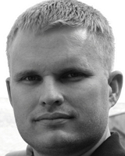 |
Title | OpenStack Storage Infrastructure & NetApp |
| Name | Robert Esker, Product Management & Strategy, NetApp | |
| Speaker Profile | Rob has been involved with the OpenStack community dating to its origins in 2010. He founded NetApp’s OpenStack effort and serves as a member of the foundation’s Board of Directors. He architected the earliest OpenStack on NetApp deployments, is a frequent speaker at OpenStack Design Summits, conferences and user groups, and is an occasional ATC. His eight year tenure at NetApp has spanned from co-founder of NetApp’s field cloud architecture team, to currently leading product management for OpenStack. His charter focuses on strategy, integration and development of NetApp portfolio technologies in and around OpenStack as well as business development, organizational and process alignment for bringing the value of NetApp’s OpenStack capabilities to market.
Prior to NetApp, Rob served in a variety of roles at Apple, Inc. ranging from building and directing a team of expert consultants, to serving as Technical Attaché to the CEO and the Board of Directors reporting directly to Steve Jobs. He’s a former U.S. Marine, and resides in Austin, Texas with his wife and two daughters. |
|
| Presentation Summary |
NetApp continues to drive value into OpenStack with integration upstream for seven successive releases. Come hear how we've combined the rich set of storage efficiency, data protection, and security features with the power of OpenStack. Discover how to consistently deliver solutions via NetApp and OpenStack partners to meet both highly critical SLAs for classic application infrastructures delivered in an “as a Service (aaS)” model as well as deploy cloud native applications with an eye to scalability, efficiency, and optimized cost of operations. Whether you require block, object, or file (via the recently incubated Manila project), we’ll demonstrate the value of NetApp's flexible, efficient and supported capabilities over an experiment with the lowest common denominator of components. |
Track 3 [13:30~14:00]
|
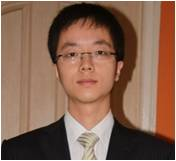 |
Title | Huawei Cloud Computing Powered by OpenStack |
| Name | Robin Xie, Senior Advisor, Huawei Cloud Computing | |
| Speaker Profile | Robin Xie, senior advisor of Huawei Cloud Coumputing, has over 10 years work experience on cloud computing relevant field.
In recent years Robin has provided cloud computing advisory service for dozens of telecom operators and public service sectors. |
|
| Presentation Summary |
1)Huawei OpenStack Journey, including Huawei contribution to OpenStack community and the milestone.
2)Huawei OpenStack Solution and product, including NFV architecture, FusionSphere(orchestration, network,storage), cascading, FusionCube. |
Track 3 [14:10 ~ 14:40]
|
|
Title | Getting the Most Out of Cinder |
| Name | Nathan Boeger, Technical Manager APJ, SolidFire | |
| Speaker Profile | Nathan Boeger is Technical Manager APJ at SolidFire, the global leader in all-flash storage solutions for the next-generation data centre. He is responsible for the growth and success of the technical team across the APJ region. Nathan has over 16 years experience in IT, mostly with technology based start-ups including SolidFire, Actifio, 3PAR. Prior to that he was Director of Network Operations at Fotolog. He has successfully built and grown technical teams in New York and the Asia Pacific region as well as delivering many Consulting projects. Nathan has a very strong technical background and an in-depth knowledge of Cloud services, Cloud infrastructure, Virtualization, Unix/Linux and Open Source technologies. He has a BS, Applied Mathematics and Computer Science from California State University-East Bay. | |
| Presentation Summary |
Are you getting the most out of Cinder Block storage in OpenStack? This session will cover multiple Cinder topics, including:
- OpenStack storage and common use cases - Cinder Architecture - Cinder Base Features and Vendor Unique Features - Boot From Cinder Volume - What’s new in Juno - Cinder best practices - Backups, Snapshots, Clones |
Track 3 [14:50~15:20]
|
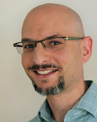Zadara Storage"/> |
Title | Software Defined Storage (SDS) and the Cloud : Changing IT Forever |
| Name | Noam Shendar, VP Business Development, Zadara Storage |
|
| Speaker Profile | Noam brings nearly 20 years of experience in the technology industry in a variety of senior management positions. At LSI Corporation, he was Sr. Director of Business Planning and Product Management in the Engenio Storage Group, where he founded and led an internal startup, took it to revenue, and successfully handed it off to NetApp when the latter acquired Engenio. Prior to that, Noam was LSI’s Director of Corporate Strategy. Prior to LSI he was Director of Strategic Marketing at MIPS Technologies, Inc., where he was responsible for the company’s efforts to penetrate new markets and expand its presence in existing ones.
Prior to MIPS, Noam was VP of Applications and Director of Engineering at iBlast, Inc., an entertainment technology startup. Prior to that, Noam held research and engineering positions at Intel Corporation’s Microprocessor Products Group. Noam has a B.Sc. (with Honors) in Electrical Engineering from the University of Wisconsin-Madison and an Executive MBA from Santa Clara University. |
|
| Presentation Summary |


| 행 사 명: | OpenStack Day in Korea 2015 | |
| 주 제: | Beyond OpenStack: Services, Applications and Platforms | |
| 일 시: | 2015년 02월 05일 (목) | |
| 장 소: | 잠실 롯데호텔 | |
| 주최주관: | 오픈스택 한국 커뮤니티 |